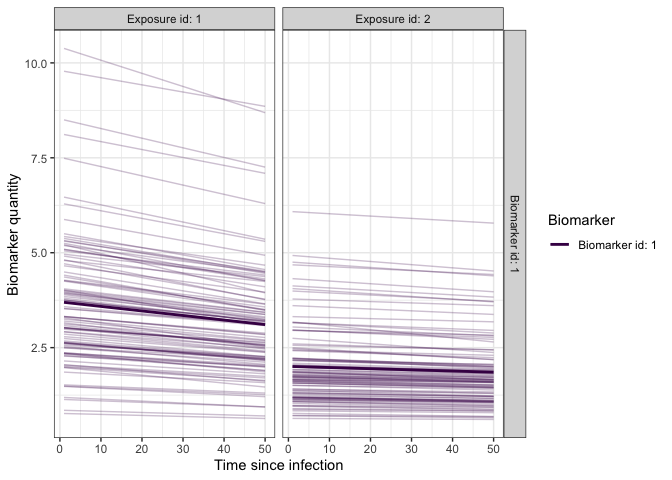
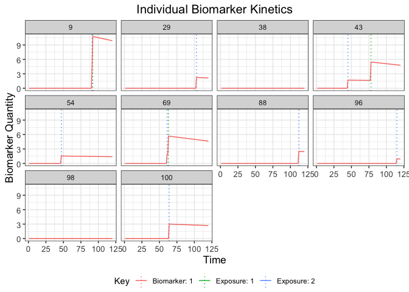
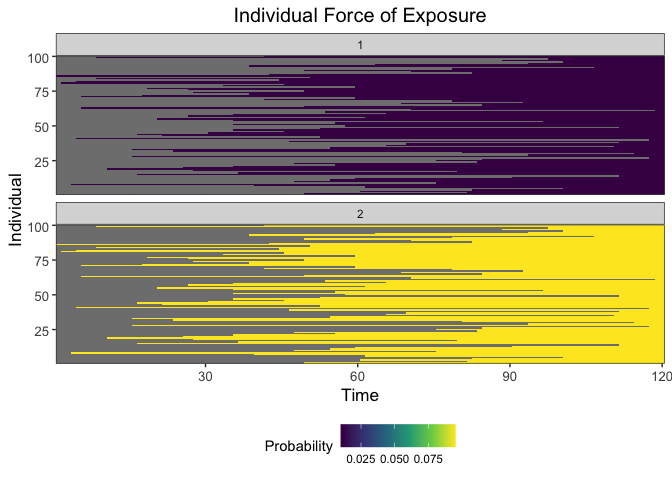
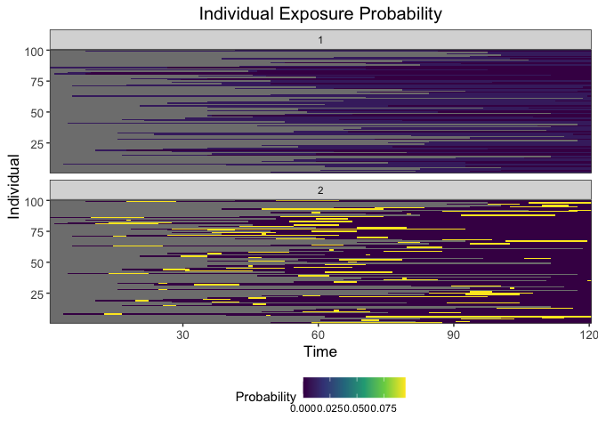
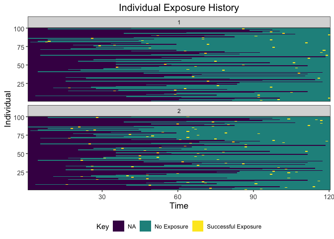
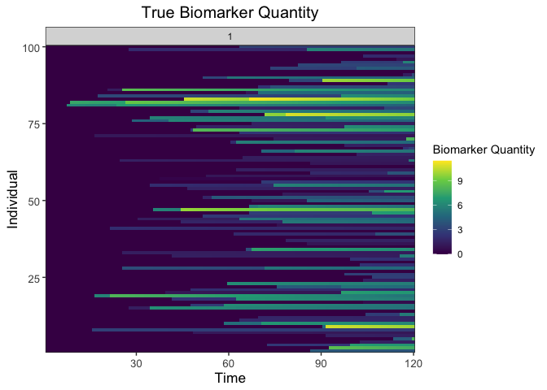
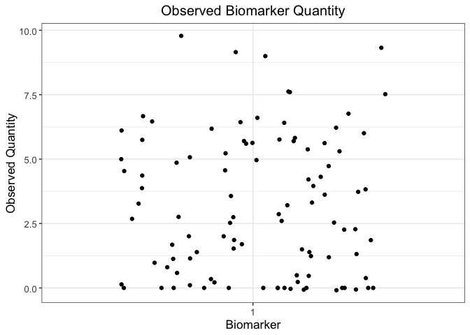

serosim

Motivation
The serosim package is designed to simulate serological survey data arising from user-specified vaccine or infection-generated and antibody kinetics processes. serosim allows users to specify and adjust model inputs responsible for generating the observed biomarker quantities like time-varying patterns of infection and vaccination, population demography, immunity and antibody kinetics, and serological survey sampling design in order to best represent the population and disease system(s) of interest.
Here, we will use the serosim package to generate a simple cross-sectional serosurvey at the end of a 10 year simulation period for 100 individuals who have either been vaccinated, infected, both or neither. We will set up each of the required arguments and models for the runserosim function in the order outlined in the methods section of the paper. We then run the simulation and examine its outputs.
There are two additional vignettes/case studies in the vignettes folder. Case study 1 provides an example of a longitudinal singular biomarker serological survey simulation structured around measles, a one-pathogen system with vaccination, but also applicable to other vaccine preventable diseases. Case study 2 provides an example of a cross-sectional multi-biomarker serological survey structured around diphtheria and pertussis, a two-pathogen system with bivalent vaccination, but also applicable to multi-pathogen systems with multivalent vaccines.
Installation
Load necessary packages:
## Install and load serosim
devtools::install_github("AMenezes97/serosim")
#> tidyselect (1.1.2 -> 1.2.0 ) [CRAN]
#> stringi (1.7.8 -> 1.7.12) [CRAN]
#> cpp11 (0.4.2 -> 0.4.3 ) [CRAN]
#> stringr (1.4.0 -> 1.5.0 ) [CRAN]
#> dplyr (1.0.9 -> 1.1.1 ) [CRAN]
#> tidyr (1.2.0 -> 1.3.0 ) [CRAN]
#> ggplot2 (3.4.1 -> 3.4.2 ) [CRAN]
#> deSolve (1.30 -> 1.35 ) [CRAN]
#>
#> There are binary versions available but the source versions are later:
#> binary source needs_compilation
#> tidyselect 1.1.2 1.2.0 FALSE
#> stringi 1.7.6 1.7.12 TRUE
#> cpp11 0.4.2 0.4.3 FALSE
#> stringr 1.4.0 1.5.0 FALSE
#> dplyr 1.0.8 1.1.1 TRUE
#> tidyr 1.2.0 1.3.0 TRUE
#> ggplot2 3.3.5 3.4.2 FALSE
#> deSolve 1.31 1.35 TRUE
#>
#> * checking for file ‘/private/var/folders/59/lj4f0j3s07z67v647cr9wncc0000gn/T/RtmpvzxfpU/remotes80fa1e741d3d/AMenezes97-serosim-d4fe1af/DESCRIPTION’ ... OK
#> * preparing ‘serosim’:
#> * checking DESCRIPTION meta-information ... OK
#> * checking for LF line-endings in source and make files and shell scripts
#> * checking for empty or unneeded directories
#> * building ‘serosim_0.0.0.9000.tar.gz’
library(serosim)
## Load additional packages required
library(tidyverse)
library(data.table)
library(ggplot2)
library(patchwork)
library(reshape2)1.1 Simulation Settings
We will simulate monthly time steps across a 10 year period. Therefore, we will have 120 time steps. Note that these are arbitrary time steps which will need to be scaled to the right time resolution to match any time-based parameters used later on.
1.2 Population Demography
For this case study, we will be simulating a population with 100 individuals and we are not interested in tracking any demography information other than an individual’s birth time. We will use the generate_pop_demography function to create the demography tibble needed for runserosim.
Note: The runserosim function only requires a demography tibble with two columns (individuals and times). In this case it will assume all individuals are born at the start of the simulation period.
## Generate the population demography tibble
## Specify the number of individuals in the simulation; N=100
## No individuals are removed from the population; prob_removal=0
demography <- generate_pop_demography(N=100, times=times, prob_removal=0)
#> Joining with `by = join_by(i)`
## Examine the generated demography tibble
summary(demography)
#> i birth removal times
#> Min. : 1.00 Min. : 1.00 Min. :121 Min. : 1.00
#> 1st Qu.: 25.75 1st Qu.: 39.50 1st Qu.:121 1st Qu.: 30.75
#> Median : 50.50 Median : 60.50 Median :121 Median : 60.50
#> Mean : 50.50 Mean : 61.55 Mean :121 Mean : 60.50
#> 3rd Qu.: 75.25 3rd Qu.: 87.25 3rd Qu.:121 3rd Qu.: 90.25
#> Max. :100.00 Max. :119.00 Max. :121 Max. :120.001.3 Exposure to biomarker mapping
Now we set up the exposure IDs and biomarker IDs for the simulation which will determine which infection or vaccination events are occurring. Here, we will simulate one circulating pathogen (exposure_ID=ifxn) and one vaccine (exposure_ID=vacc) both of which will boost the same biomarker, IgG titers (biomarker_ID=IgG). This biomarker map can be used for any simulations of vaccine preventable diseases like measles vaccination and measles natural infection. runserosim requires that exposure_id and biomarker_id are numeric so we will use the reformat_biomarker_map function to create a new version of the biomarker map. Users can go directly to numeric biomarker_map if they wish.
Note that the reformat_biomarker_map function will number the exposures and biomarkers in alphabetical order so that the first exposure event or biomarker that is listed will not necessarily be labeled as 1.
## Create biomarker map
biomarker_map_original <- tibble(exposure_id=c("ifxn","vacc"),biomarker_id=c("IgG","IgG"))
biomarker_map_original
#> # A tibble: 2 × 2
#> exposure_id biomarker_id
#> <chr> <chr>
#> 1 ifxn IgG
#> 2 vacc IgG
## Reformat biomarker_map for runserosim
biomarker_map <-reformat_biomarker_map(biomarker_map_original)
biomarker_map
#> # A tibble: 2 × 2
#> exposure_id biomarker_id
#> <dbl> <dbl>
#> 1 1 1
#> 2 2 11.4 Force of Exposure and Exposure Model
Now, we need to specify the foe_pars argument which contains the force of exposure for all exposure_IDs across all time steps. We also specify the exposure model which will be called within runserosim later. The exposure model will determine the probability that an individual is exposed to a specific exposure event. Since we did not specify different groups within demography, all individuals will automatically be assigned group 1. Therefore, we only need 1 row for dimension 1 in foe_pars. Groups can be used as an indicator of location if the user wishes to specify a location specific force of exposure. Dimension 3 of the foe_array must be in the same order as the exposure_id within the biomarker map. For example, the force of exposure for exposure_id 1 will be inputted within the foe_pars[,,1]. We specified the same force of exposure for all time steps within foe_pars for simplicity but users will likely have varying numbers to match real world settings.
## Create an empty array to store the force of exposure for all exposure types
foe_pars <- array(0, dim=c(1,max(times),n_distinct(biomarker_map$exposure_id)))
## Specify the force of exposure for exposure ID 1 which represents natural infection
foe_pars[,,1] <- 0.01
## Specify the force of exposure for exposure ID 2 which represents vaccination
foe_pars[,,2] <- 0.1
## Specify a simple exposure model which calculates the probability of exposure directly from the force of exposure at that time step. In this selected model, the probability of exposure is 1-exp(-FOE) where FOE is the force of exposure at that time.
exposure_model<-exposure_model_simple_FOE
## Examine the probability of exposure over time for the specified exposure model and foe_pars array
plot_exposure_model(exposure_model=exposure_model_simple_FOE, times=times, n_groups = 1, n_exposures = 2, foe_pars=foe_pars)1.5 Immunity Model
Here, we specify the immunity model which will determine the probability that an exposure event is successful in producing an immunological response. We will use a simple immunity model (immunity_model_vacc_ifxn_simple) where successful exposure is only conditional on the total number of previous exposure events. With this model, the probability of successful vaccination exposure depends on the number of vaccines received prior to time t and the individual’s age at time t while the probability of successful infection is dependent on the number of infections prior to time t.
## Specify immunity model within runserosim function below
immunity_model<-immunity_model_vacc_ifxn_simple
## Create 3 additional arguments needed for this immunity model
## Specify which exposure IDs represent vaccination events
vacc_exposures<-2
## Specify the age at which an individual is eligible for vaccination (9 months old); note non vaccine exposures are listed as NAs
vacc_age<-c(NA,9)
## Specify the maximum number of successful events an individual can receive for each exposure type (1 infection event and 1 vaccination event)
max_events<-c(1,1)1.6 Antibody Model and Model Parameters
Now, we specify the antibody model to be used within runserosim to track antibody kinetics, or more broadly biomarker kinetics for each biomarker produced from successful exposure events. We will be using a monophasic boosting-waning model in this example. This model assumes that for each exposure there is a boost and boost waning parameter. The antibody kinetics parameters are pre-loaded within a csv file. Users can edit the csv file to specify their own parameters. All parameters needed for the user specified antibody model must be specified within the model_pars. Lastly, we define the draw_parameters function which determines how each individual’s antibody kinetics parameters are simulated from the within-host processes parameters tibble (model_pars). We will use a function which draws parameters directly from model_pars for the antibody model with random effects to represent individual heterogeneity in immunological responses. Parameters are drawn randomly from a distribution with mean and standard deviation specified within model_pars. runserosim requires that exposure_id and biomarker_id within model_pars are numeric and match the exposure to biomarker map so we will use the reformat_biomarker_map function again to create a new version of model_pars. Users can go directly to numeric model_pars if they wish.
## Specify the antibody model
antibody_model<-antibody_model_monophasic
## Bring in the antibody parameters needed for the antibody model
## Note that the observation error parameter needed for the observation model (Section 1.7) is defined here too.
model_pars_path <- system.file("extdata", "model_pars_README.csv", package = "serosim")
model_pars_original <- read.csv(file = model_pars_path, header = TRUE)
model_pars_original
#> exposure_id biomarker_id name mean sd distribution
#> 1 ifxn IgG boost 4.0000 2.0000 log-normal
#> 2 ifxn IgG wane 0.0033 0.0005 log-normal
#> 3 <NA> IgG obs_sd NA 0.2500 normal
#> 4 vacc IgG boost 2.0000 1.0000 log-normal
#> 5 vacc IgG wane 0.0016 0.0005 log-normal
## Reformat model_pars for runserosim
model_pars<-reformat_biomarker_map(model_pars_original)
model_pars
#> exposure_id biomarker_id name mean sd distribution
#> 1 1 1 boost 4.0000 2.0000 log-normal
#> 2 1 1 wane 0.0033 0.0005 log-normal
#> 3 NA 1 obs_sd NA 0.2500 normal
#> 4 2 1 boost 2.0000 1.0000 log-normal
#> 5 2 1 wane 0.0016 0.0005 log-normal
## Specify the draw_parameters function
draw_parameters<-draw_parameters_random_fx
## Plot example biomarker trajectories given the specified antibody kinetics model, model parameters and draw parameters function
plot_antibody_model(antibody_model_monophasic, N=100, model_pars=model_pars,draw_parameters_fn = draw_parameters_random_fx, biomarker_map=biomarker_map)
1.7 Observation Model and observation_times
Now we specify how observed biomarker quantities are generated as a probabilistic function of the true, latent biomarker quantity and when to observe these quantities. In this step, we specify the sampling design and assay choice for our serological survey. We will take samples of all individuals at the end of the simulation (t=120).
Our chosen observation model observes the latent biomarker quantity given a continuous assay with added noise. The added noise represents assay variability and is implemented by sampling from a distribution with the true latent biomarker quantity as the mean and the measurement error as the standard deviation. The observation standard deviation and distribution are defined within model_pars as the “obs_sd” parameter. Within this observation model, we can also specify the assay sensitivity and specificity.
## Specify the observation model
observation_model<-observation_model_continuous_noise
## Specify assay sensitivity and specificity needed for the observation model
sensitivity<-0.85
specificity<-0.9
## Specify observation_times (serological survey sampling design) to observe biomarker 1 across all individuals at the end of the simulation (t=120)
observation_times<- tibble(i=1:max(demography$i),t=120, b=1)1.8 Optional Arguments
There are no optional arguments needed for this simulation.
1.9 Run Simulation
This is the core simulation where all simulation settings, models and parameters are specified within the main simulation function. Run time for this step varies depending on the number of individuals and the complexities of the specified models. There is a built in pre-computation step within runserosim where the simulation attempts to perform as much pre-computation as possible for the exposure model to speed up the main simulation code. Users can turn off this pre-computation by setting pre-computation to FALSE within runserosim.
## Run the core simulation and save outputs in "res"
res<- runserosim(
simulation_settings,
demography,
observation_times,
foe_pars,
biomarker_map,
model_pars,
exposure_model,
immunity_model,
antibody_model,
observation_model,
draw_parameters,
## Other arguments needed
max_events=max_events,
vacc_exposures=vacc_exposures,
vacc_age=vacc_age,
sensitivity=sensitivity,
specificity=specificity
)
## Note that models and arguments specified earlier in the code can be specified directly within this function.1.10 Generate Plots
Now that the simulation is complete, let’s plot and examine the simulation outputs.
## Plot biomarker kinetics and exposure histories for 10 individuals
plot_subset_individuals_history(res$biomarker_states, res$exposure_histories_long, subset=10, demography)
#> Warning: Removed 6 rows containing missing values (`geom_line()`).
## Plot individual force of exposure for all exposure types
## This is the output of the exposure model.
## Note: All individuals are under the same force of exposure since we specified a simple exposure model and constant foe_pars
plot_exposure_force(res$exposure_force_long)
## Plot individual successful exposure probabilities for all exposure types
## This is the output of the exposure model multiplied by the output of the immunity model.
## In other words, this is the probability of an exposure event being successful and inducing an immunological response
plot_exposure_prob(res$exposure_probabilities_long)
## Plot individual exposure histories for all exposure types
plot_exposure_histories(res$exposure_histories_long)
## Plot true biomarker quantities for all individuals across the entire simulation period
plot_biomarker_quantity(res$biomarker_states)
## Plot the serosurvey results (observed biomarker quantities)
plot_obs_biomarkers_one_sample(res$observed_biomarker_states)
## Note that the simulated kinetics parameters are also stored
head(res$kinetics_parameters)
#> # A tibble: 6 × 7
#> i t x b name value realized_value
#> <int> <dbl> <dbl> <dbl> <chr> <dbl> <dbl>
#> 1 1 98 2 1 boost 0.644 0.644
#> 2 1 98 2 1 wane 0.000975 0.000975
#> 3 1 107 1 1 boost 4.06 4.06
#> 4 1 107 1 1 wane 0.00283 0.00283
#> 5 2 118 2 1 boost 1.82 1.82
#> 6 2 118 2 1 wane 0.000909 0.000909
## Combine plots as seen in paper
# library(cowplot)
# plot_grid(plot_exposure_prob(res$exposure_probabilities_long), plot_exposure_histories(res$exposure_histories_long), nrow=1, ncol=2, align = "hv", scale=c(.98,.98))
# plot_grid(plot_biomarker_quantity(res$biomarker_states), plot_obs_biomarkers_one_sample(res$observed_biomarker_states), nrow=1, ncol=2, align = "hv", scale=c(.98,.98))